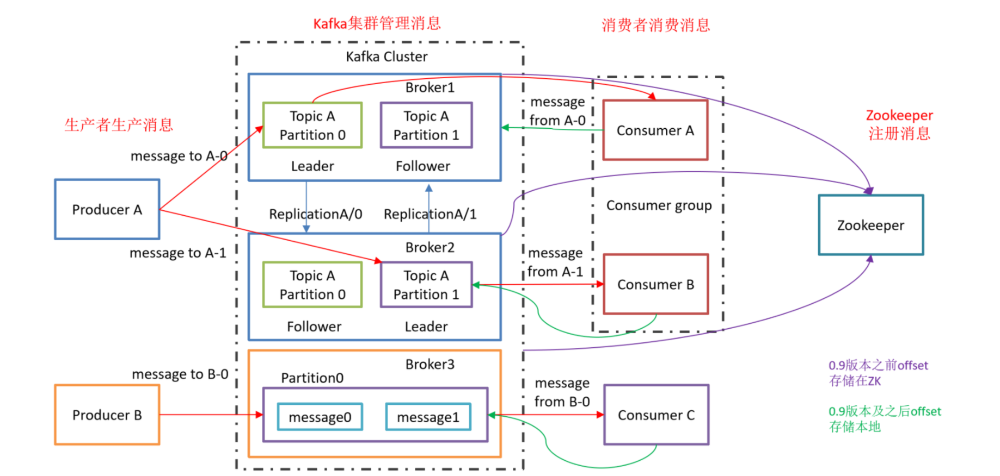
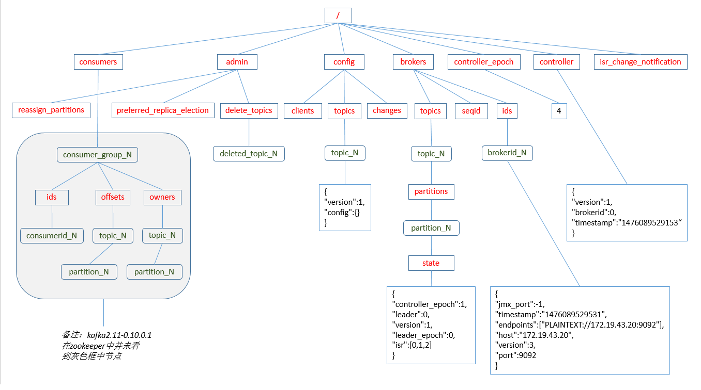

Ch01-Kafka 介绍
June 20, 2018
Kafka 是一款开源的、轻量级的、分布式、可分区和具有复制备份的 (Replicated)、基于 ZooKeeper 协调管理的分布式流平台的功能强大的消息系统。与传统的消息系统相比，Kafka 能够很好地处理活跃的流数据，使得数据在各个子系统中高性能、低延迟地不停流转。
1. 基本信息 #
| 条目 | 说明 |
|---|---|
| 官网 | https://kafka.apache.org/ |
| 下载地址 | https://kafka.apache.org/downloads |
2. 术语介绍 #
| 术语 | 说明 |
|---|---|
| Broker | 一台 Kafka 机器就是一个 broker。一个集群由多个 broker 组成。一个 broker 可以容纳多个 topic。 |
| Producer | 消息生产者，即向 Kafka Broker 发消息的客户端 |
| Consumer | 消息消费者，从 Kafka Broker 取消息的客户端 |
| Consumer Group | 消费者组，由多个 consumer 组成。消费者组内每个消费者负责消费不同分区的数据，一个分区只能由一个组内 消费者消费；消费者组之间互不影响。所有的消费者都属于某个消费者组，即消费者组是逻辑上的一个订阅者。 |
| Topic | |
| Partition | 一个 topic 可以分为多个 partition，每个 partition 是一个有序的队列。 |
| Replica | 一个 topic 的每个分区都有若干个副本，一个 leader 和若干个 follower。 |
| Leader | 每个 partition 多个副本的“主”，生产者发送数据的对象，以及消费者消费数据的对象都是 Leader（负责读写） |
| Follower | 每个 partition 多个副本中的“从”，实时从 Leader 中同步数据，保持和 leader 数据的同步。leader 发生故障时，某个 follower 会成为新的 leader（只负责备份）。 |
| Offset | 每一条数据都有一个 offset，是数据在该 partition 中的唯一标识（其实就是消息的索引号），各个 consumer 会保存其消费到的 offset 位置，这样下次可以从该 offset 位置开始继续消费 |
3. 架构介绍 #
3.1 整体架构 #
Kafka 主要由 Broker，Producer，Consumer 组成，用户可以使用 Producer 和 Consumer 插入和查询数据。Broker 是 Kafka 的核心服务部分，它将所有的数据组织起来，以 Topic 这个概念对外提供服务。
Kafka 2.8 引入了 KRaft 机制来摆脱对 ZooKeeper 的依赖，不过截止 2022 年 4 月份，仍然没有达到生产环境使用标准。

3.2 Topic 架构 #
topic 和 partition 是逻辑上的概念，partition 对应的 replica 则是物理概念，一个 replica 对应一个 log 文件，producer 每次生产的消息都会追加到该文件的末尾。
由于每次生产者生产消息都会追加到 log 文件中，为了防止日志文件过大影响消息的查找定位效率，kafka 引入了分片和索引的机制，将一个 replica 又分为若干个 segment，每个 segment 包含一个存储数据的 log 文件和查找的 index 索引文件，这些文件位于一个文件夹下，文件夹的命名规则为 topic 名称 + 分区序号。
在 Kafka 中限定 replica 的数量不能大于 broker。

3.3 ZK 节点组织 #
